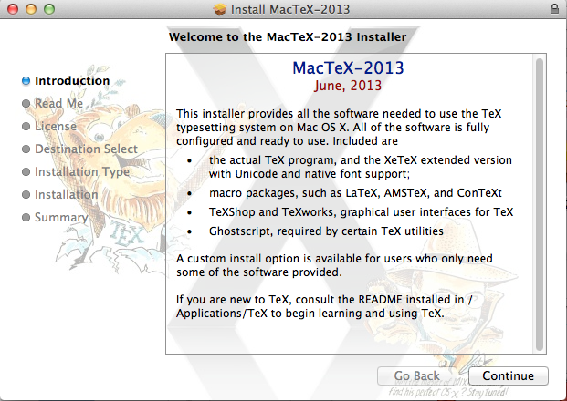
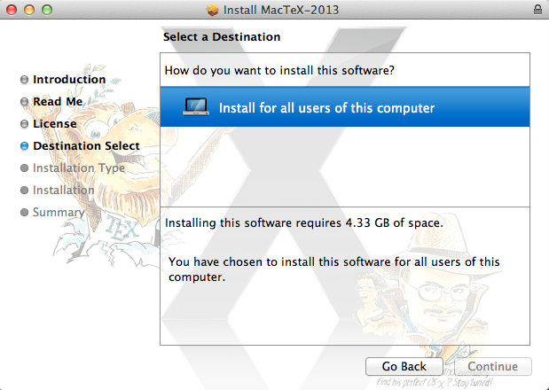

From the LaTex home page located at http://latex-project.org/intro.html - "LaTeX is a high-quality typesetting system; it includes features designed for the production of technical and scientific documentation. LaTeX is the de facto standard for the communication and publication of scientific documents. LaTeX is available as free software. LaTeX is not a word processor! Instead, LaTeX encourages authors not to worry too much about the appearance of their documents but to concentrate on getting the right content. LaTeX is based on the idea that it is better to leave document design to document designers, and to let authors get on with writing documents."
Please note that this is a rather large download (2.2 Gigabytes) so you should probably try to download it while on campus since the network speeds are typically much faster than a home/apartment broadband connection. Proceed to the MacTex User's group home page to download the appropriate version of MacTex which is the foundation package necessary to generate LaTex documents. If you have Apple OSX 10.5 or higher you can download the package directly from this link. This will create a file called MacTex.pkg in your downloads folder. Note that for Apple OSX versions before 10.4 and 10.3 you will need to download the package from here.
|  |  |
You should reboot / restart your system
Next go in to RStudio and go to "Preferences" and then select "Sweave". The graphic should look like the following. Make sure that on the line "Typeset LaTex into PDF using:" that the drop down menu item reflects "pdfLaTex".
\documentclass{article}
\title{Cartesian closed categories and the price of eggs}
\author{Jane Doe}
\date{September 1994}
\begin{document}
\SweaveOpts{concordance=TRUE}
\maketitle
Hello world!
\end{document}
To install LaTex on Windows you will use MikTex (pronounced mick-tech) is an up-to-date implementation of TeX/LaTeX and related programs for Windows (all current variants). It is very easy to install MiKTeX. The MiKTeX Setup Wizard guides you through the installation process. Proceed to HERE to initiate the download of the installer. Once you download it then you can double click the file to launch the install process.
The install process is relatively straightforward and you should make note of the Folder into which MikTeX is being installed which is usually Program Files -> MikTeX or something similar. You can actually change this location during the installation process though it is probably better to allow the installer to pick the location. After the installation process has completed you can navigate to the folder to verify that the install has taken place.